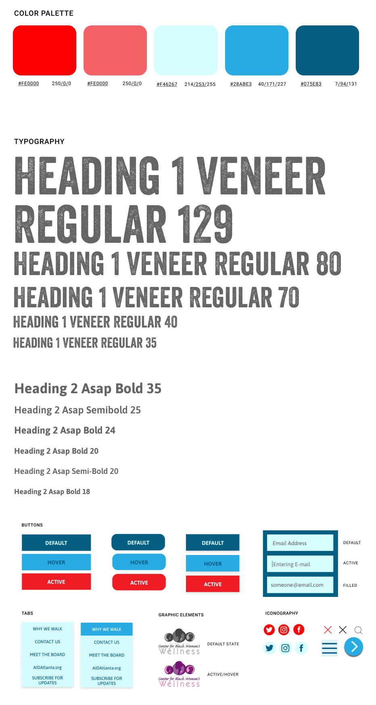

The Brief
OVERVIEW
During a 3-week design sprint my team and I were challanged to redesign a homepage of a local non-profit organiaztion of our choice. Since our project’s completion the website has changed but for purposes of this case study I will use their previous website’s version.
MY ROLE
Researcher, UX/UI designer focusing on infographics animations
TEAM
3 members
TOOLS
Miro, Figma, Trello, Invision
METHODOLOGY
When my team and I came across Aids Walk Atlanta Website, we immediatelly started listing parts of the website that we thought may need improvement but before making any changes we chose to conduct user tests to make sure our hypothesis is backed up by reserach.

THE PROBLEM
The existing Aids Walk Atlanta’s website is outdated, not scannable and hard to navigate.
While browsing the website, we have observed that the website does not provide detailed AID/HIV educational resources and does not make it easy for users to register or donate to the cause which is decreasing participation and funding to the Atlanta AIDs organizations.
“How might we improve AIDs Walk Atlanta website so that our customers are more informed and build a stronger emotional connection to the cause based on increased funds, engagement, and event participation?”
THE SOLUTION
To make Aids Walk Atlanta a more successful and credible non-profit organization by directing users to reliable sources and information about aids/hiv, facilitating donating and registration process, and helping users find events easier in their community.
RESEARCH
SURVEY
We begaun our research by conducting a survey in hopes to learn more about what motivates people to support non-profit organizations and what they epect to see on their webpages .
We asked a total of 9 questions & got 18 responses.
The results showed us that 50% of people support non profits to help the community and majority prefer to see the following information on the websites:

USER INTERVIEWS
Then, we virtually interviewed 5 people and asked them to complete three tasks that we believed an average user should accomplish easilyon Aids Walk Atlnta current website.
1. Register for a Walk

2. Join a Team

3. Find "Why We Walk" Info

HOMEPAGE ANALYSIS
Outside of user interviews, our team completed an heuristic evalutaiton of the homepage and competitive analysis to see what belived was missing from designers pount of view.
Heuristics Analysis Key Learnings
- Lack of white space and scannability
- Search Box is absent
- No Log In Option
- Outdated colo scheme
Competitive Analysis Key Learnings
- Infographics provide info that is easily digested by users
- Intentional animation can elevate cite’s credibilty
- No Log In Option
- Bold typography brings attention urgency to the matter
AFFINITY DIAGRAM

Afterwards, we put all of the data we gathered from user tests and compettive research into a miro board and completed an affinity diagram to distinguish the most common UI issues and users’ pain points.
Our key findings were:
- Users found it odd that donate button is absent
- The website is not scannable and overall lacks information
- Users failed to find how to register to walk
DEFINITION
USER PERSONA
To help us emotioanlly connect to the user and their motives, We created a user persona.

SORYBOARD
Then, we created a storyboard to help us envision the best experince a user can have while vising the redesigned website.

IDEATION
PRIORITY MATRIX

During brainstoring, we used “I like, I wish, What if” exercise to list al possible features users might like. Then we voted on our favorite chioces and with a help of a priority matrix, we pin pointed most useful and feasible features given our time and budget constraints.
We divided the graph into 4 zones and focused on “High Impact, Low Complexity quadrant.
The user issues we chose to focus are:
- Add a donate button
- Add quick fast facts
- Add a registration button
- Move up mission statement
SITEMAP
Due to poject’s time contraints we performed a card sorting exercises with my team members to come up with a new global navigation.

PROTOTYPING
UI STYLE GUIDE INPIRED BY AIDS WALK ATLNTA INSTAGRAM PAGE
WIREFRAMES
First, our team created our own designs and during class we combined our ideas to come up with the desktop and mobile wireframes. We used a grid to guide our design process to make sure our mockups were responsive across various devices.Then, we applied UI materials to create Hi-Fi mockup.

In the process of making our wireframed hi-fi we iterated out footer to make it more informational and changed the position of mobile buttons due to make them more acessibilty and viusally appealing.
TESTING
FEEDBACK
We tested the mock up on three people and recieved valuable feedback that lead to more iterations.
Problems
- Users did not notice AIDS fast facts
- On desktop version beenfeciaries’ drag and scroll feature was not evident
- “Walk Info” Button’s wording is confusin
Solutions
- Make facts into cards and add animation
- Delete drag and scroll and display all beenfeciaries
- Change wording to “Learn More”
When brainstorming how users could get more drawn to fast facts I thougt about how I wanted the users to feel about them. While AIDS is a serious topic, I wanted users to get excited about the facts and to inspire them to learn more about this issue. Therefrore, I decided to make the infographics into cards and gamify them by making micro animations appear upon user’s interaction.


FINAL RESPONSIVE MOCKUPS

LEARNINGS AND FUTURE PLANS
WHAT I LEARNED
- Test, test, test! As designers, sometimes we get hung up on small things that users may not even care about but glance over something that users deem as impactful. It’s important to rember that we are not the users and in time of confusing we can resolve our doubts with user testing.
WHAT I WISH WE DID DIFFERENTLY
- I wish we did more A/B testing to make sure some of our design choices were backed up by users’ preferences and not worry as much about what we like but rather focus on what user needs.
NEXT STEPS
- Develop other pages
- Build out a simple registration
- Include personal stories and testimonials of people who recived help from the rasied money